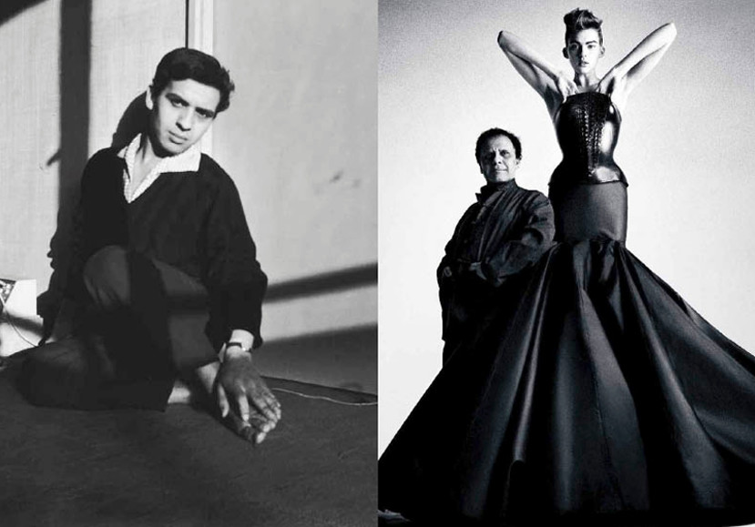
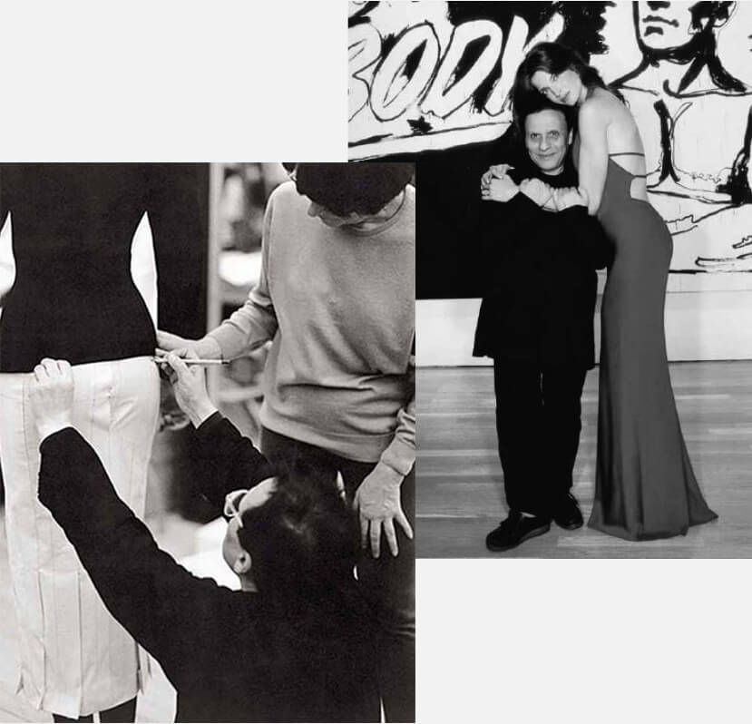
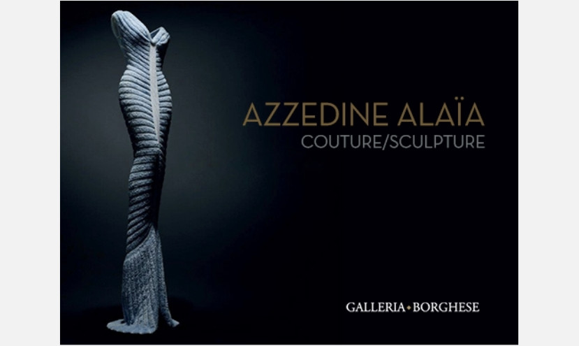
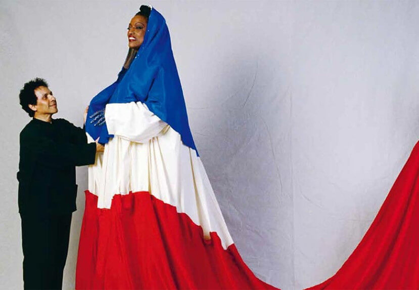

<!DOCTYPE html>
<html>
<head lang="en">
    <meta http-equiv="Content-Type" content="text/html; charset=utf-8">
    <title>阿莱亚ALAIA-传奇人生</title>
    <meta name="viewport" content="width=device-width, initial-scale=1, maximum-scale=1, user-scalable=no, minimal-ui" >
    <meta name="msapplication-tap-highlight" content="no">
    <meta name="apple-mobile-web-app-capable" content="yes">
    <link rel="stylesheet" type="text/css" href="css/screen.css"/>
</head>
<body class="page-historicalmoments">
<div class="wrapper">
    <h2 class="title">
        传奇人生
    </h2>
    <div class="content">
        
        <p>阿泽丁·阿莱亚Azzedine Alaïa出生于突尼斯。来到巴黎之前，他在突尼斯美术学院学习雕塑。
            在克丽斯汀·迪奥（Christian Dior）工作室短暂的积累经验之后，他在rue de Bellechasse创立了自己的工作室。他的客户名单星光璀璨， 其中包括Cécile de Rothschild, Louise de Vilmorin, Bettina Graziani, Greta Garbo 和 Arletty.
            <br><br>
        </p>
        
        <p>
            1985年，他获得两项由法国文化部颁发的时尚奥斯卡大奖。同年，他的首场展览亮相波尔多现代艺术博物馆，并与丹·弗拉文的雕塑作品同时展出。
            <br><br>
            1988年，他在纽约Palladium的时装秀震动了时尚圈。“超级模特”们因由他而被发掘，而她们也成为阿莱亚忠实的朋友与追随者。
            <br><br>
            1989年,，他为杰西·诺曼在法国大革命200周年盛大集会上的表演设计服装
            <br><br>
        </p>
        
        <p>
            1998年,，他出版了第一本书。 
            <br><br>
            2002年，他创立了阿莱亚基金会，用于存储与归档他的作品与私人收藏，以期许有一天能够向公众与学生开放。此外他一直保持与世界各地享有盛名的当代艺术博物馆良好的合作关系。
            <br><br>
            2015年，他推出了首款香水，命名为Alaïa Paris。
            <br><br>
        </p>
        
    </div>
</div>
</body>
</html>